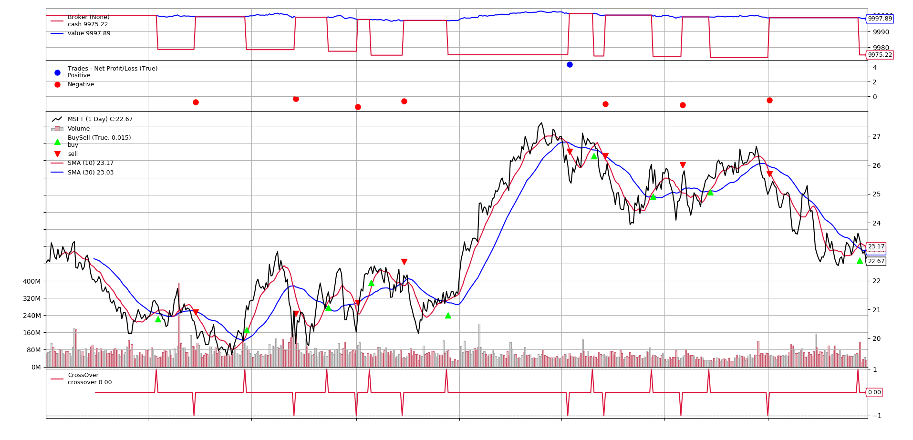
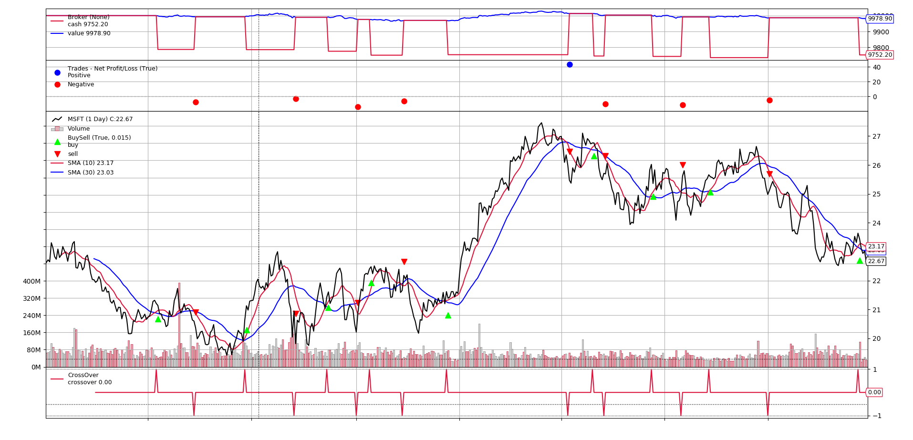
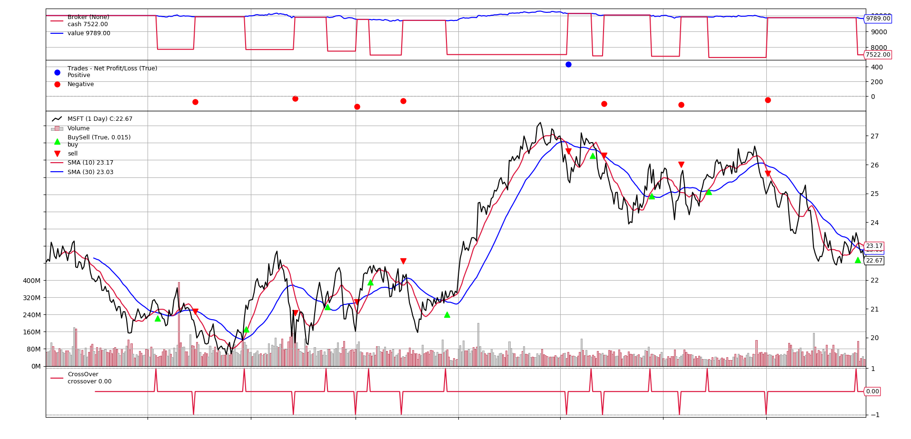
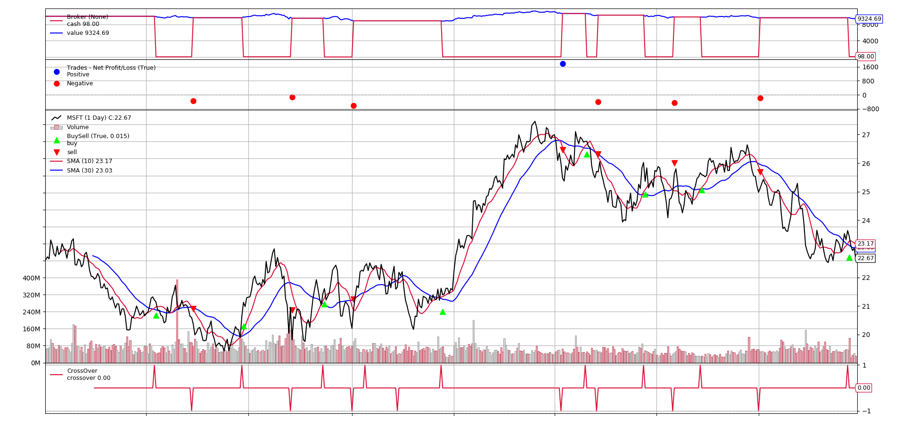

Python 回測框架（五）Sizer
出處：https://stockbuzzai.wordpress.com/2019/07/23/python-%e5%9b%9e%e6%b8%ac%e6%a1%86%e6%9e%b6%ef%bc%88%e4%ba%94%ef%bc%89sizer/
在上一篇 Python 回測框架（四）CrossOver 和 Signal 中，我們談到了如何使用CrossOver 和 Signal 來買賣商品。但是我們又遇到了一個問題，我們無法控制買賣的商品數量。在一般交易中，我們可能會根據當前的狀況來買賣不同的數量的商品，因此我們在這一篇文章要介紹的就是 Backtrader 中負責控制買賣商品數量的工具 Sizer。
首先我們先回看下面這段程式碼：
from datetime import datetime
import backtrader
class SmaCross(backtrader.SignalStrategy):
def __init__(self):
sma10 = backtrader.ind.SMA(period=10)
sma30 = backtrader.ind.SMA(period=30)
crossover = backtrader.ind.CrossOver(sma10, sma30)
self.signal_add(backtrader.SIGNAL_LONG, crossover)
cerebro = backtrader.Cerebro()
data = backtrader.feeds.YahooFinanceData(dataname='MSFT',
fromdate=datetime(2011, 1, 1),
todate=datetime(2012, 12, 31))
cerebro.adddata(data)
cerebro.addstrategy(SmaCross)
cerebro.addsizer(backtrader.sizers.SizerFix, stake=10)
cerebro.run()
cerebro.plot()
這一段程式碼幾乎跟 Python 回測框架（四）CrossOver 和 Signal 中的程式碼一樣，但是我們多了一行程式碼：
cerebro.addsizer(backtrader.sizers.SizerFix, stake=10)
這裡我們設定了一個 Sizer，這個 Sizer 每次買賣固定的數量，一次是 10 股。下列是設定不同的 stake 的值的時候所產生的結果。
stake = 1
stake=1 的時候，產生的結果跟 Python 回測框架（四）CrossOver 和 Signal 中是相同的。
stake = 10
stake=10 的時候，我們發現每次購買股票資金明顯花費的比較多。
stake = 100
stake=100 的時候，我們發現每次購買的的數量確實更多了，所花費的資金也更多。
另外，在 Backtrader 之中，主要分成兩種 sizer。一種 sizer 屬於預設的 sizer，在系統中如果沒有其他的 sizer，就使用這個 sizer。在之前的程式碼就是使用預設 sizer 的範例。
另一種 sizer 是跟隨著 strategy 的，這種 sizer 只處理對應的 strategy 的買賣。設定strategy 的 sizer 有二種方法，一種是透過 cerebro 的 addsizer_byidx 來設定，如以下範例：
idx = cerebro.addstrategy(SmaCross)
cerebro.addsizer_byidx(idx, backtrader.sizers.SizerFix, stake=100)
其中 idx 是 cerebro 在新增 strategy 的時候所回傳 idx 值，以此當參數來新增 sizer。
第二種方式是透過 strategy 的 setsizer 來設定 sizer，程式碼如下：
self.setsizer(backtrader.sizers.SizerFix(stake=100))
如何自訂 sizer
要撰寫自訂的 sizer，需要繼承 backtrader.Sizer 這個物件，然後覆寫 _getsizing 這個函式，以下是範例：
class AllSizer(backtrader.Sizer):
def _getsizing(self, comminfo, cash, data, isbuy):
if isbuy:
return math.floor(cash/data.high)
else:
return self.broker.getposition(data)
AllSizer 是一個直接將資金買入商品的 sizer，其中 comminfo 代表手續費的相關資訊，cash 代表目前持有的現金，data 代表目前這檔商品，isbuy 代表這是買入還是賣出的請求。在買入的部分，我們利用持有現金除上當天最高價計算買入的股票數。賣出的時候則是把所有持倉都賣出。
以下是完整的程式碼和執行的結果：
from datetime import datetime
import yfinance as yf
import backtrader
import math
class AllSizer(backtrader.Sizer):
def _getsizing(self, comminfo, cash, data, isbuy):
if isbuy:
return math.floor(cash / data.high)
else:
return self.broker.getposition(data)
class SmaCross(backtrader.SignalStrategy):
def __init__(self):
sma10 = backtrader.ind.SMA(period=10)
sma30 = backtrader.ind.SMA(period=30)
crossover = backtrader.ind.CrossOver(sma10, sma30)
self.signal_add(backtrader.SIGNAL_LONG, crossover)
self.setsizer(AllSizer())
cerebro = backtrader.Cerebro()
# data = backtrader.feeds.PandasData(dataname=yf.download('TSLA', '2018-01-01', '2023-01-01'))
data = backtrader.feeds.PandasData(
dataname=yf.download("MSFT", "2011-01-01", "2023-01-01")
)
# data = backtrader.feeds.YahooFinanceData(
# dataname="MSFT", fromdate=datetime(2011, 1, 1), todate=datetime(2012, 12, 31)
# )
cerebro.adddata(data)
idx = cerebro.addstrategy(SmaCross)
cerebro.run()
# pip install matplotlib==3.2.2
cerebro.plot()

有了 sizer，我們就可以把計算買賣商品數量的邏輯獨立，讓我們在撰寫回測程式的時候更方便且更有彈性。
Backtrader - sizer
出處：https://ithelp.ithome.com.tw/articles/10279754
之前有介紹過，如果我們下單除了股價以外，還有一個很重要的因素就是要買幾股，有些時候，我們的策略可能會需要不同的買入數量，Backtrader 也有一個物件 sizer 可以提供相關的彈性，如果預設的沒有合適的，也可以自訂義一個，以下先介紹內建的一些 sizer
FixedSize
顧名思義就是固定的數量 參數：
- stake { default 1 }: 固定數量的股數
- tranches { default 1 }: 只執行 stake 的幾分之一 最後的數量 = stake / tranches
cerebro.addsizer(bt.sizers.SizerFix, stake = 1000)
FixedReverser
一樣是固定數量，只是在賣的時候，會賣出 2 倍的庫存，也就是把正的庫存賣成負的庫存 參數：
- stake { default 1 } 固定的股數
cerebro.addsizer(bt.sizers.FixedRevert, stake = 1000)
PercentSizer
使用一定比例的帳戶餘額去買進 參數：
- percents { default 20 }: 20%
cerebro.addsizer(bt.sizers.PercentSizer, percents = 80)
AllInSizer
基本上和 PercentSizer 一樣，只是預設是 100% 的帳戶餘額去買進股票，另一個差別就是 All in 聽起來比較霸氣。 這裡有一個要注意的是，AllIn 是以當天的收盤價去算要買的股數，可是在執行買入的時候，是隔天的開盤價，所以隔天是漲的話，就會造成餘額不足，買入失敗喔
cerebro.addsizer(bt.sizers.AllInSizer)
其它
PercentSizerInt, AllInSizerInt，這兩個看說明是說在回傳數量的時候會轉成整數，不過我真正去執行的結果，兩個都是一樣的，所以暫時看不出差別
自訂義 sizer
要自訂義 sizer 也很簡單
- 訂義一個 sizer 的 class 繼承 backtrader.Sizer
繼承後可以使用 self.strategy 和 self.broker 來取得相關資料
- 取得庫存 self.strategy.getposition(data)
- 取得目前淨值 self.broker.getvalue() (或是 self.stratgy.broker.getvalue())
- 覆寫 _getsizing(self, comminfo, cash, data, isbuy)
- comminfo: 手續費相關資訊
- cash：目前帳戶餘額
- data: 目前的操作(買入/賣出)資料
- isbuy: 是否為買入(True)
例如：改寫 percent 變成可以買的最大的張數 ( 1000 股 )
import backtrader as bt
import math
class PercentBoardSizer(bt.Sizer):
params = (
('percents', 20),
)
def _getsizing(self, comminfo, cash, data, isbuy):
position = self.broker.getposition(data)
if not position:
size = cash / data.close[0] * (self.p.percents / 100)
if size < 1000:
# 小於 1000 股，就不買
size = 0
else:
size = math.floor(size / 1000) * 1000
else:
size = position.size
size = int(size)
return size
class AllInBoardSizer(PercentBoardSizer):
params = (
('percents', 100),
)
使用方法
-
在 strategy 中：
- def setsizer(self, sizer): 可以取得已經初始化的 sizer
- def getsizer(self): 回傳目前使用的 sizer
- sizer 屬性可以直接進行 get/set (前幾天的範例就是使用這個)
-
使用 cerebro： 目前看來，如果 strategy 和 cerebro 都有設定的話，會以 cerebro 為主，cerebro 有兩個方法可以設定
- addsizer(sizerClass, *args, **kwargs): 指定所有的 strategy 使用的 sizer
- addsizer_byidx(idx, sizerClass, *args, **kwargs): 根據不同的 strategy inx 來使用不同的 sizer ex:
cerebro = bt.Cerebro() # 預設的 sizer cerebro.addsizer(bt.sizers.SizerFix, stake = 1000) # 這樣就可以針對不同的 strategy 來設定不同的 sizer idx = cerebro.addstrategy(TestStrategy) cerebro.addsizer_byidx(idx, bt.sizers.SizerFix, stake = 5)